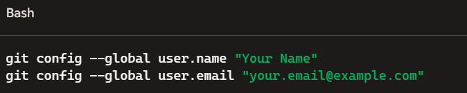

Welcome to Day 4
To install Git properly, follow these steps .
- Download the Git Installer:
- Go to the official Git website:
https://git-scm.com/downloads
- Click on the “Download” button for Windows.
- The download should start automatically. If not, select the correct version for your system (32-bit or
64-bit).
- Run the Git Installer
- Once the file is downloaded, double-click to run the .exe installer.
- You’ll see the Git Setup window appear.
- Now check you've Visual studio on your pc or not. If not then click on Download button and download it.
- Visit GitHub’s Signup Page.
- Open github and check if you've already have any account or not. If you already have an account then you
simply go for sign in button. But if you don't have any account then you must have to sign up first.
To sign up:
- Enter your name (Choose a unique username).
- Enter Your Email Address (Provide a valid email address that you can access. GitHub will use this to
send account-related notifications).
- Create a Password.
- Select "Verify your account"
- Click "Create account"
- Open Git Bash or your terminal and configure Git with your username and email:

- Once github account is created,
Create Your First Repository
- Clicking the "+" icon in the top-right corner.
- Then provide new repository name and click on add reade.md and click create repository.
- Clone a repository
- Use the following command to clone a repository to your local machine.
- Basic Git Commands:
- Track changes: git add .=>(for all files)
- git add .filename =>(For specific)
- Commit Changes: git commit -m "Your commit message"
- Push changes to Gthub:git push origin main